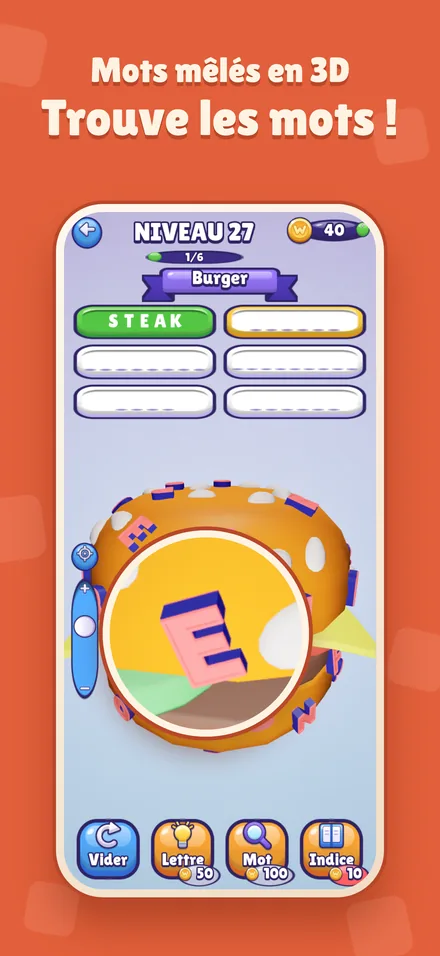
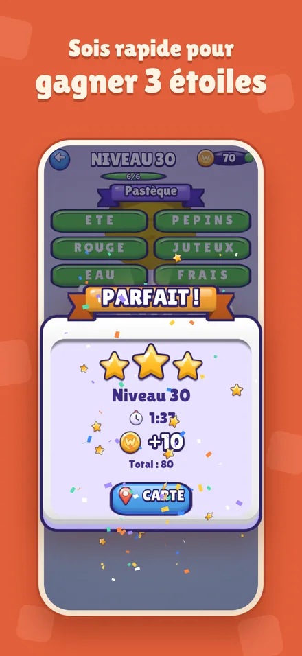
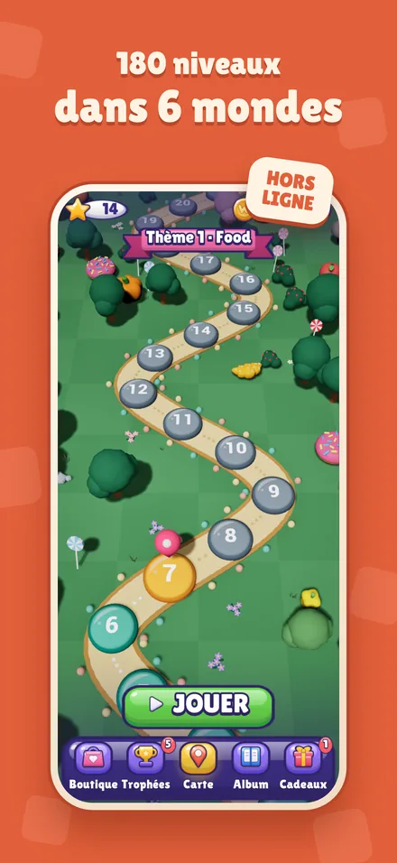
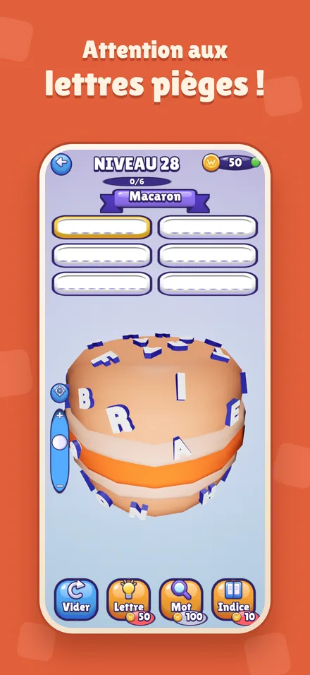
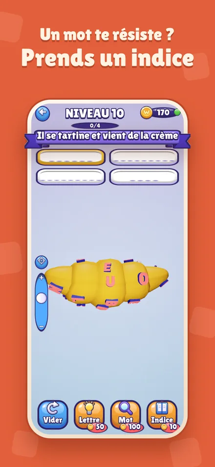
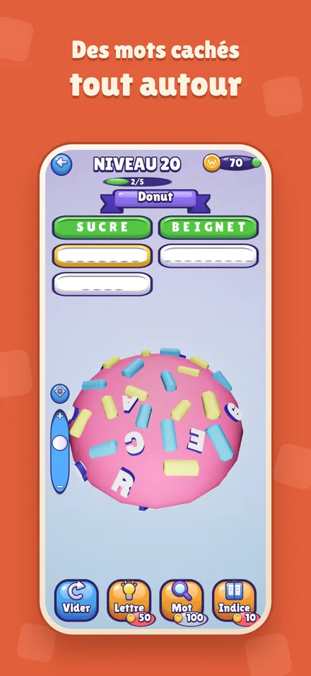
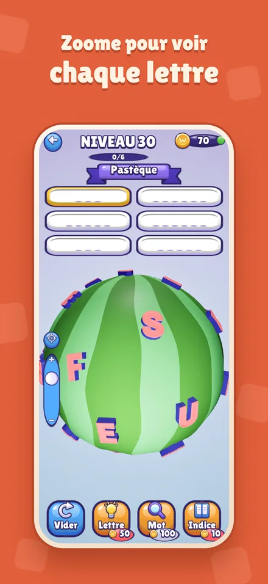

Un jeu de mots cachés sur des objets à faire tourner
Fais tourner un burger, un donut ou une pizza en 3D et trouve les mots cachés dans ses lettres. Lis le thème, choisis un mot, puis touche ses lettres dans l'ordre. Attention aux lettres pièges ! Trouve tous les mots pour gagner des étoiles et débloquer le niveau suivant.
Explore 180 niveaux dans 6 mondes, retrouve ta progression sur une carte en 3D et utilise des indices quand tu bloques. Le jeu est conçu pour iPhone et Android, avec des mots et une interface en français et en anglais.
Le jeu en images







Questions fréquentes
Comment jouer ?
Glisse le doigt sur l'objet pour le faire tourner et utilise le curseur vertical pour zoomer. Touche un mot en haut de l'écran, puis touche ses lettres sur l'objet dans le bon ordre. Au niveau 1, une main animée te montre les gestes.
Peut-on jouer sans connexion internet ?
Oui, les niveaux sont jouables hors ligne et la progression reste enregistrée sur ton appareil. Les vidéos publicitaires facultatives nécessitent une connexion et sont proposées selon leur disponibilité.
Je suis bloqué sur un niveau
Utilise un indice : il révèle une lettre ou un mot entier en échange de pièces. Tu gagnes des pièces à chaque niveau terminé. Si tu n'as plus de pièces, le jeu t'en offre.
Ma progression a disparu
La progression (niveaux, étoiles, pièces, réglages) est enregistrée uniquement dans ton téléphone. Elle est effacée si tu supprimes le jeu, et elle ne passe pas d'un téléphone à l'autre.
Comment changer la langue ?
Le jeu suit la langue de ton téléphone : en français si ton téléphone est en français, sinon en anglais. Change la langue dans les réglages du téléphone, puis relance le jeu.
Couper le son, la musique ou les vibrations
Ouvre les Paramètres depuis l'écran d'accueil ou la carte.
Publicités et vie privée
Des publicités Google AdMob s'affichent entre les niveaux, et des vidéos facultatives donnent des pièces. En Europe, tu peux revoir ton choix de consentement avec le bouton Confidentialité des Paramètres ; sur iPhone, le suivi publicitaire se règle aussi dans Réglages > Confidentialité et sécurité > Suivi. Détails dans la politique de confidentialité.
Nous contacter
Un bug, une question, une idée de mot ou de niveau ?
Écris à labasquelucas@gmail.com
Indique ton modèle de téléphone et le numéro du niveau : on répond sous quelques jours.